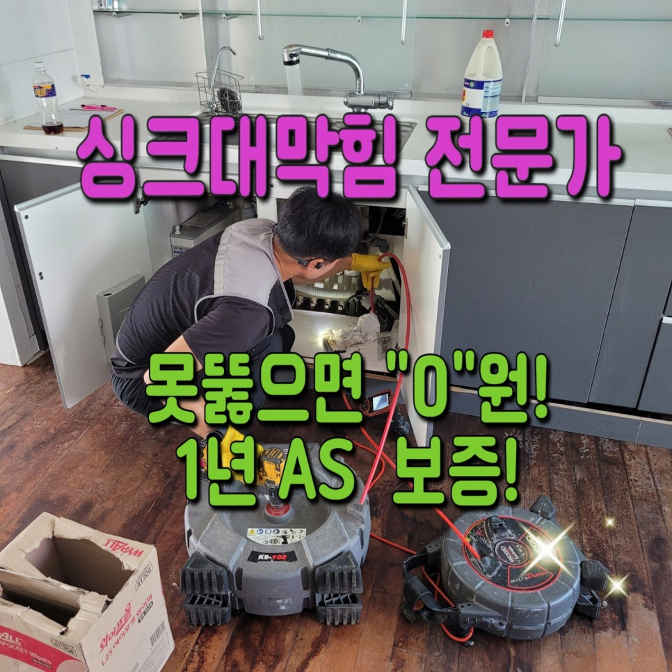
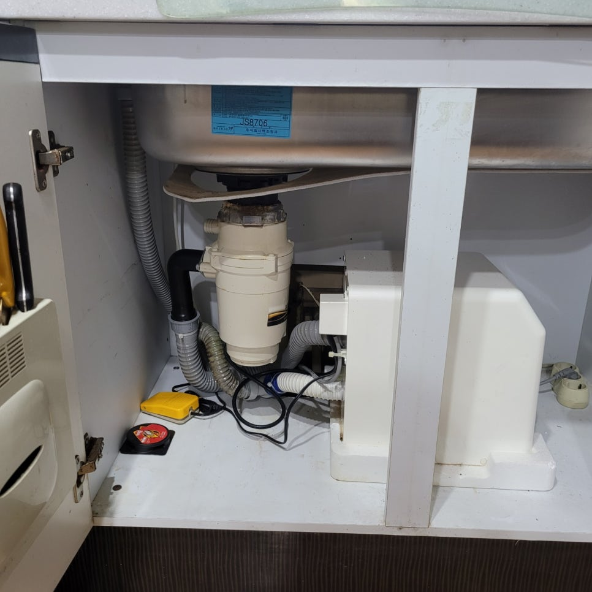
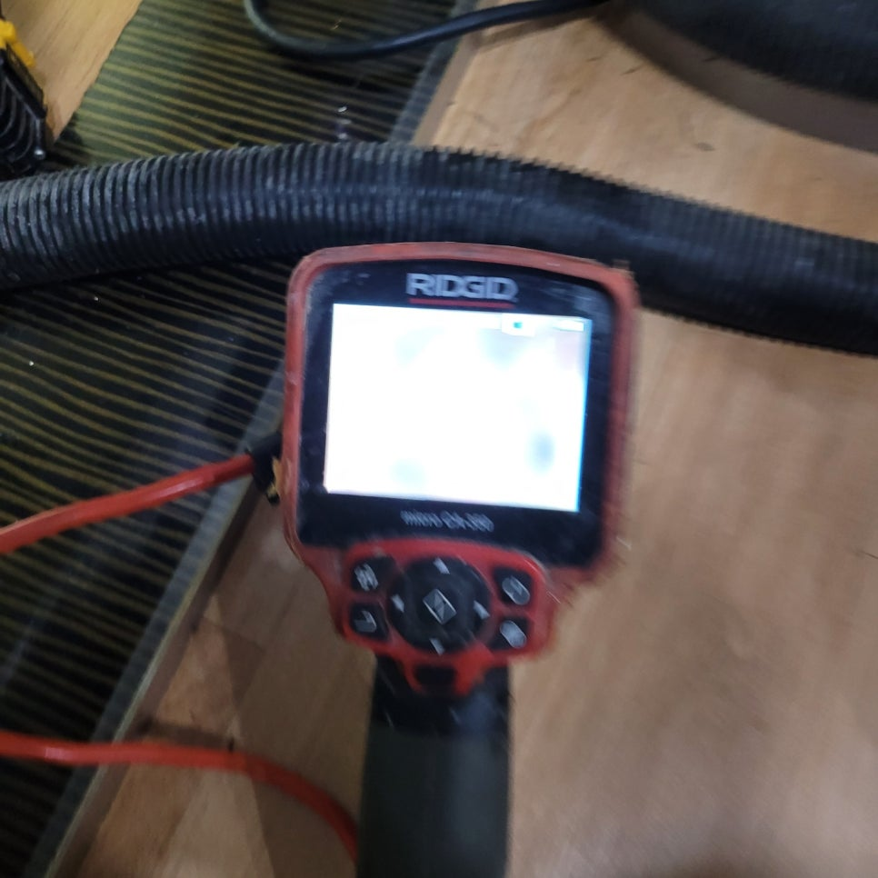
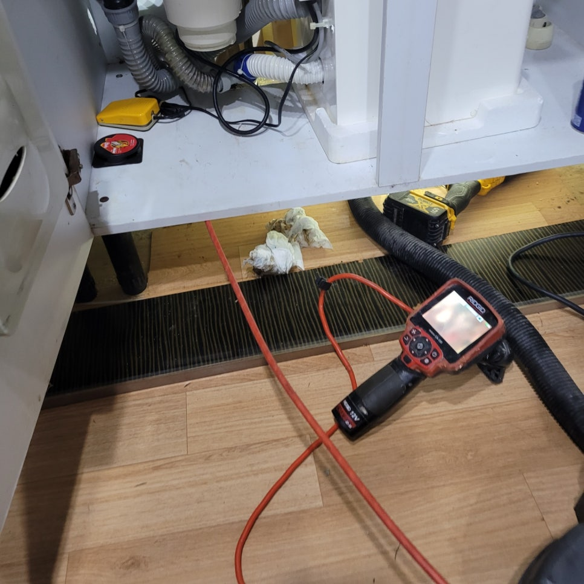
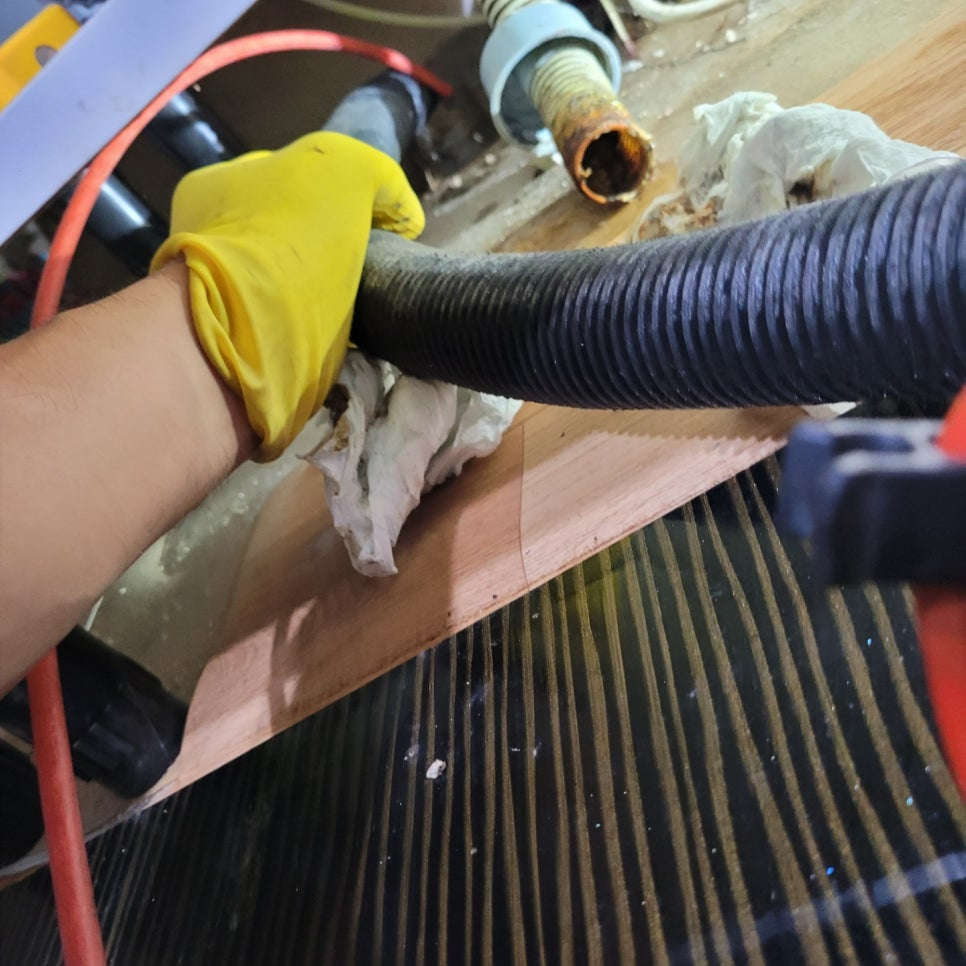
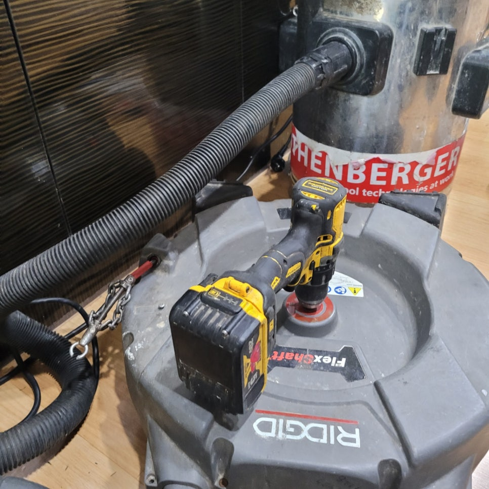
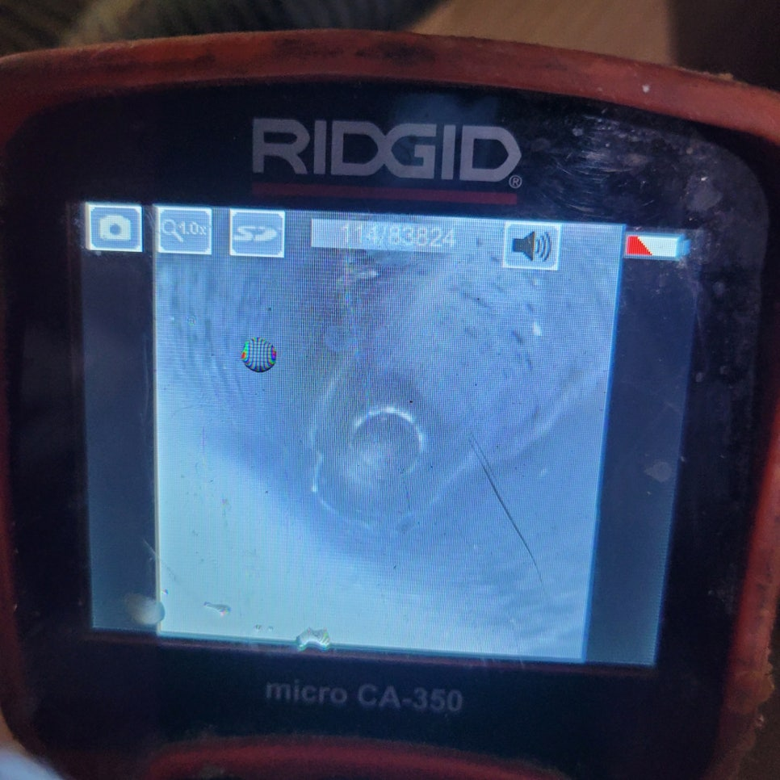

🏠 평택 송탄싱크대막힘 송탄동 지산동 서정동 송탄하수구설비
평택 싱크대막힘 전문 시공 후기

📋 작업 개요
- 위치: 평택
- 서비스 유형: 싱크대막힘, 하수구막힘, 배관막힘, 뚫는업체
- 작업 일시: 2023. 8. 28. 19:48
- 업체명: 하수구수사대 (010-5615-2118)
🔍 문제 상황
평택 송탄싱크대막힘 송탄동 지산동 서정동 송탄하수구설비
안녕하세요!
오늘은 평택에 위치한 송탄 싱크대막힘 현장을 다녀왔습니다.
삶에서 결코 절대 뺄 수 없는 "의,식,주(衣,食,住)" 중에 중요한 점이라고 볼 수 있는 "식"에 해당하는 집안의 공간을 묻는다면 옵션으로 주방이라 단언할 수 있는데요. 부엌쪽은 음식을 하는 단란한 공간으로 요즘처럼 날이 더운 계절일때는 어쩌다 부주의하게 관리해주면 심한 냄새와 벌레 꼬임으로 무척 신경쓰이는 경우가 많다고 할 수 있습니다.
특별히 싱크대가 막히는 현상이라도 발생한 경우라면 물도 제대로 쓰지 못하여
설거지를 못하는 일도 발생되고, 실제로 정상적인 일상생활이 어렵다고도 볼 수도 있을텐데요. 지난달에도 송탄쪽에 하수구막힘을 방문했는데, 아파트에 살면서 심한 막힘을 겪으시며 커다란 스트레스를 받게되고 계신 의뢰인을 보고 왔는데요.
송탄싱크대막힘은 항상 방어할 사이도 없이 나타나는 경우가 많은데요. 그 때 당시 현장들도 유사한 상황에 처했었습니다.

🔎 원인 분석
💡 전문가 진단: 평택 송탄싱크대막힘 송탄동 지산동 서정동 송탄하수구설비
지금바로 본인한테 일어난 게 아니라 여겨서 지금의 포스팅을 단순하게 넘어갈 부분이 아니란 사실을 강조해드리면서, 구체적인 사례들을 이 시간부터 알려드리도록 하겠습니다. 아파트, 오피스텔, 상가, 빌라 등을 정하지 않고서 싱크대가 있는 곳이라면 언제든 이와같은 막힘을 체험할 수 있는데요.
그 때 당시 방문 현장 같은 경우 막힘 현상으로도 긴 시간동안 싱크대에 손을
대었었던 날이 별로 없어, 꽤나 심각한 상황이지 않을까 미리미리 추측해 보게 됩니다. 송탄싱크대막힘을 처리함에 있어 기본적으로 있어야 하는 석션 장비는 당연하고, 배관 안쪽까지 볼 수 있는 내시경 카메라, 그 곳에 엄청난 분쇄력을 소유하고 있는 플렉스 샤프트 장비까지 다같이 챙겼는데요.
왜 막혀버리고 있었는지 전혀 알지 못하는 처지에서 여러번 찾아가는 일이 없게 미리미리 써야 되는 장비를 모두 챙겨 찾아간거라고 보시면 수긍이 빠르실 것 같아요. 현장에 도착한 후 저희들이 첫번째로 한 일은 바로, 의뢰하신 분과의 대화였는데요.
여태까지의 생활 습관과 함께 그 때의 현상들과 관련하여 어
떠한 시도들을 했었는지 먼저 살펴보았습니다.
하수구뚫는 곳을 알아보기까진 거의 모든 현장에서 셀프로 파는 시도 등은 모두 해보시는 경우가 많은데요. 그 때 당시 현장들도 뚫어뻥을 이용해서 어떻게 해서든 고쳐보려고 했으나, 결국 실패해 도움을 요청하셨어요.

🔧 작업 과정
물론 스스로도 깔끔히 처리될때가 수두룩하나, 배관 막힘 일은 속도전이라고 얘기할 수 있을 만큼 시간이 많이 걸릴수록 해결이 쉽지않아 웬만 하면 전문 업체의 실력을 빌려서 마무리 하시는 걸 추천합니다. 고친 후 상황파악을 위해 싱크대에 물을 틀어서 얼마만큼 막혀 있는 상태인지 확인해봤는데요.
하수구 안쪽으로 물이 전혀 내려가지 않는, 매우 심각한 증상을 드러났습니다
. 혹여 막혀있는 상황이 그렇게 안심하다면 어느 수준만큼 통수는 보여줘야 했는데, 많은 시간을 두고서 살펴봐도 물이 모두 내려가지 않는 상황으로 발빠른 응수가 절실했죠.
여기에 우선 석션 장비를 사용하여 흡입해서 해결되는지 확인하는 작업을 거쳤는데요. 그러나 아쉽지만서도 실제로 흡입으로 빠져나오는 물질은 전혀 없었고, 예상을 했던 것보다 배관 안을 틀어막고 있는 슬러지 또는, 이물질의 양과 단단함이 대단함을 느낄 수 있었습니다.
마지막에 예상한 것과 같이 엄청난 양의 기름 찌꺼기와 음식물 찌꺼기가 발견됐는데요.
구축 아파트라 긴 세월동안 누적된 상태로 모아진 기름 찌꺼기들이 무지막지하게 싱크대 배관을 에워싸고 있었고, 상황이 이러하니 배관의 직경이 대부분이 물이 흘러가는 게 힘들만큼 매우 협소해져 있어서, 어떤 이유로 물이 내려가지 않았는지 납득할 수 있는 경우였습니다.
곧장 플렉스 샤프트를 활용하여 본격적인 스케일링 일을 진행하기 시작했는데요. 천천히 배수 상태가 좋아지는 걸 알 수 있었답니다.
플렉스 샤프트 스케일링 작업들은 세심하게 하는 것이 제일 핵심부분이며, 낡은
주택일수록 이런저런 피해가 초래하지 않도록 하는 것이 매우 중요한 부분이기에, 저희는 항상 이런 걸 깨닫고 원만하게 작업을 진행해드리고 있습니다.
이와 더불어 배관 내시경 카메라를 가끔씩 활용하여 내부를 살펴보면서 일을 했기에 좀더 확실히 기름 찌꺼기와 이물질이 속해있는 부분 쪽에 제한하여 작업하는 게 충분히 가능했는데요. 사진에서 보이는 것처럼 작업 전후의 모습 자체가 확실하게 변화가 된 것을 파악할 수습니다.
또한 마무리하는 부분에서 싱크대 하부 주름관이 하수 배관과 뻗어가는 부위에서 살짝 꺽여져 있는 모습이 나타났는데요.
이런 부분들은 언제든 물이 고일 가능성이 있고 이 음식이 오래되면 다른 종류의 부류의 막힘으로 이어지는 항목이라, 의뢰인분께 바로 보고하고 아무탈없이 도와드렸습니다.


✅ 작업 완료
마지막엔 실제로 문제되는 게 깔금하게 처리된 건지 살펴보기 위해 통수 테스트까지 시도했는데요. 다행히도 싱크대 하수구 안쪽으로 물이 진짜 시원하게 흐르는 모습을 알 수 있었답니다.
고객분께서도 더불어서 살펴보시면서 "진짜로 문제되는 게 온전히 처리되었구나" 하는 생각에 분명한 안도의 한숨까지 쉬시더라고요. 저희 업체는 당일에 출동하는 건 당연하고 한방에 문제점들을 잘 잡아 처리하기 위해 써야 되는 장비를 다같이 준비하고 가는, 준비성 철저하기로 둘째가라고하게되면 서러운 업체라 단언할 수 있는데요.
송탄싱크대막힘이 문제라면 고민부터 하지 마시고 직접 저희의 자문으로 단시간안에 처리해 나가시길 희망합니다.




⚠️ 주방 싱크대 배관 막힘 예방 수칙
- ✅ 기름기가 묻은 식기나 프라이팬은 설거지 전 키친타올로 반드시 기름때를 닦아내세요.
- ✅ 주기적으로 싱크대 개수대에 뜨거운 물을 가득 받아 한 번에 내려 배관 내부 기름을 씻어내세요.
- ✅ 배수구 거름망을 미세한 필터로 사용하시고 음식물 찌꺼기가 틈으로 새어 들지 않게 관리하세요.
- ✅ 베이킹소다와 식초를 뜨거운 물과 함께 일주일에 한 번씩 부어주면 배관 살균과 막힘 예방에 좋습니다.
💡 핵심 정리
- 확실한 장비 작업(내시경 점검 및 샤프트 스케일링)으로 원인을 뿌리 뽑습니다.
- 작업 후 1년 이내에 동일한 부위 재발 시 100% 무상 A/S 서비스를 보장합니다.
- 서울 · 경기 · 인천 전 지역에 24시간 언제든 긴급 출동할 수 있도록 항시 대기 중입니다.
❓ 자주 묻는 질문 (FAQ)
🚨 평택 싱크대막힘 문제로 고민이신가요?
정확한 원인 진단과 확실한 시공으로 재발 없는 해결을 약속드립니다.
24시간 긴급 출동 | 서울 · 경기 · 인천 전지역 | 1년 내 재발 시 무상 A/S